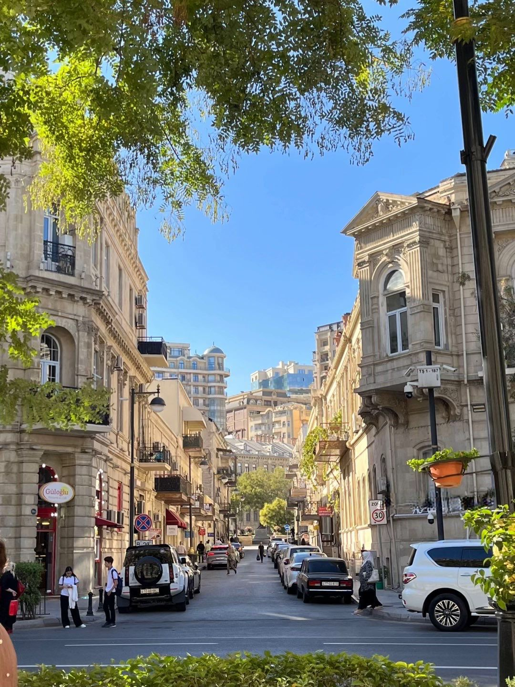
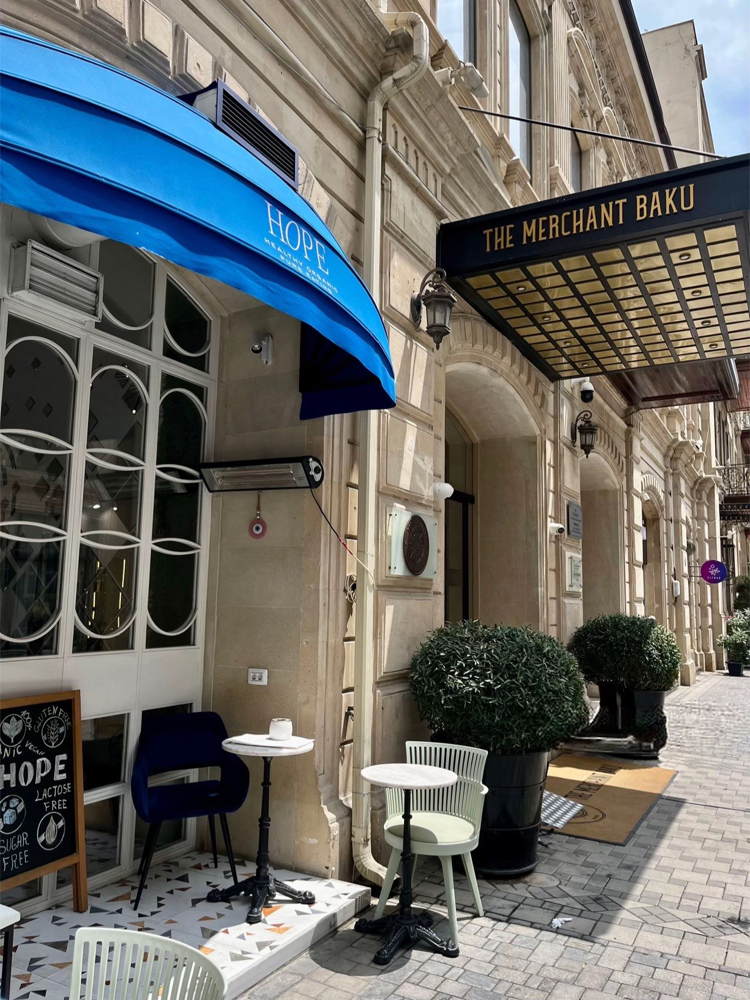

This architecture in Baku has such a beautiful, old-world charm that makes you feel like you’ve stepped into a different era. I love how the intricate stone carvings and classic balconies sit right next to that unique wooden windowed section—it's a great example of the city's rich history. The warm sunlight hitting the facade gives the whole street a very inviting, high-end feel that’s perfect for a casual afternoon of exploring. It’s a really elegant shot that perfectly captures the sophisticated character of the city.

This view of the street in Baku is absolutely stunning and feels so full of life. The way the sun catches the warm, sandy tones of the historic buildings creates such a golden, inviting atmosphere for a walk. It is really cool how the modern cars and city life contrast with that classic, intricate architecture and the lush green trees framing the sky. This shot perfectly captures that unique Baku vibe where history and a busy, modern city come together in a really beautiful way.

This cafe corner in Baku has such a welcoming and sophisticated energy. I love the contrast between that bold blue awning and the classic, warm stone of the building—it gives the whole street a very high-end yet cozy feel. The little outdoor tables look like the perfect spot to just sit for a while, enjoy a coffee, and watch the city go by. It’s a really lovely shot that captures that polished, inviting character that my city Baku is so famous for.